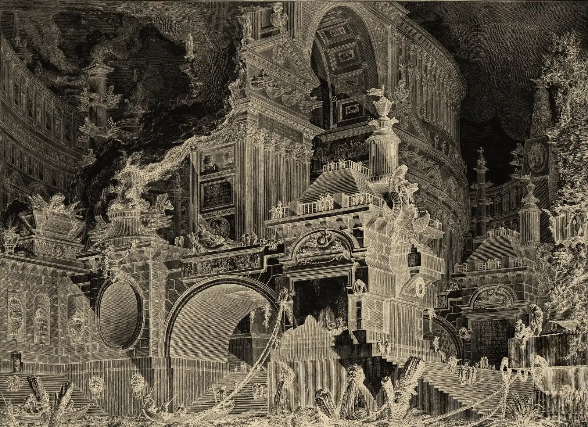

Industrial engineering · Human factors · Optimization
Arjun Patel: Engineering systems around people, performance, and evidence.
Plate I. Rembrandt, Aristotle with a Bust of Homer, 1653. The Met, public domain.
Prologue
I began with mechanical systems: how components interact, and how manufacturing decisions shape quality. At Clemson I am widening the frame to the people who use, operate, and depend on them.
An Industrial Engineering master’s student at Clemson University with a background in Mechanical Engineering. I work across human-centered design, optimization, quality improvement, and mechanical simulation to make complex systems easier to understand and improve.

A portal, a park, a rotor, a delivery route. Every system is built around someone.
Plate II. Giovanni Battista Piranesi, Parte di ampio magnifico Porto all’uso degli antichi Romani, ca. 1749–50, shown in negative. The Met, public domain.
Selected work
From an accessible information portal to park-location models and rotor simulations, these projects show how I frame problems, evaluate tradeoffs, and connect technical analysis to practical decisions.
-
HFES UXTG Information Portal
Human factors and accessibility
Accessibility and quality assurance for an event-first information portal, informed by stakeholder needs and a four-participant usability study.
Evidence: 14.18 sMean event-registration task time in prototype testing
-
Asheville Urban Park Access Optimization
Operations research and decision support
Five facility-location models exploring how efficiency and equity objectives change proposed park investments for a population of 88,860.
Evidence: 52.73%Modeled half-mile coverage in the ten-new-park coverage scenario
-
Bell-407 Helicopter Rotor and Blade System
Mechanical design and simulation
A comparative CFD study of two blade profiles, supported by CAD assembly work and static structural analysis of rotor components.
Evidence: NACA-0012 vs SC-1095Compared in an academic simulation study
-
Outpatient Clinic Last-Mile Routing
Logistics and integer programming
A comparison of traveling-salesperson and capacity-constrained routing models for deliveries to eight outpatient clinics.
Evidence: 45.32 kmThree-van plan, as reported
Method
Three questions I bring to any system.
-
Who does it serve?
Human-centered systems
Understand user needs, evaluate accessibility, and test whether people can complete important tasks.
-
What are the tradeoffs?
Optimization and operations
Translate constraints into models that support decisions about access, routing, production, and resource allocation.
-
Will it hold up?
Mechanical analysis and quality
Use simulation, inspection, and process analysis to investigate performance and improve engineering workflows.
Experience and education
- August 2025–May 2027 expected M.S. Industrial Engineering Clemson University · Clemson, United States
- April 2024–June 2024 Quality Assurance Intern BC Instruments India Pvt. Ltd. · Anand, India
- April 2023–June 2023 Production Engineer Intern Tripcon Engineering Pvt. Ltd. · Anand, India
- 2021–2025 Bachelor’s in Mechanical Engineering Charusat University · India